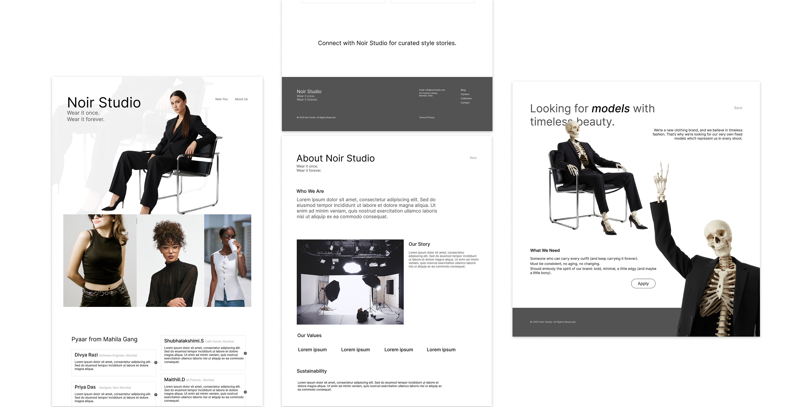

Visual Direction
The interface design focuses on clarity, strong typography, balanced spacing, and a minimal color palette to create a premium look.


A UI-focused digital design project showcasing clean, minimal, and modern interface layouts for web and mobile platforms.
The interface design focuses on clarity, strong typography, balanced spacing, and a minimal color palette to create a premium look.
Desktop website layouts designed with a strong visual hierarchy and clean composition to highlight studio identity and work.

Responsive mobile layouts that maintain visual consistency while ensuring readability and ease of navigation.


Noir Studio demonstrates my ability to design clean, minimal, and visually consistent user interfaces across platforms.